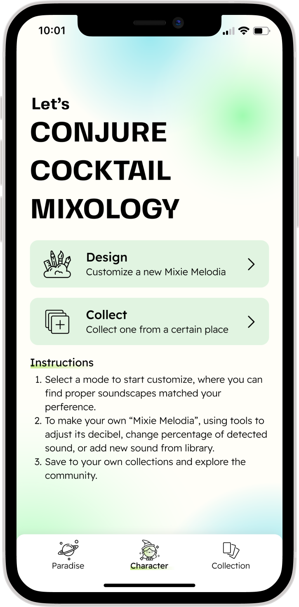
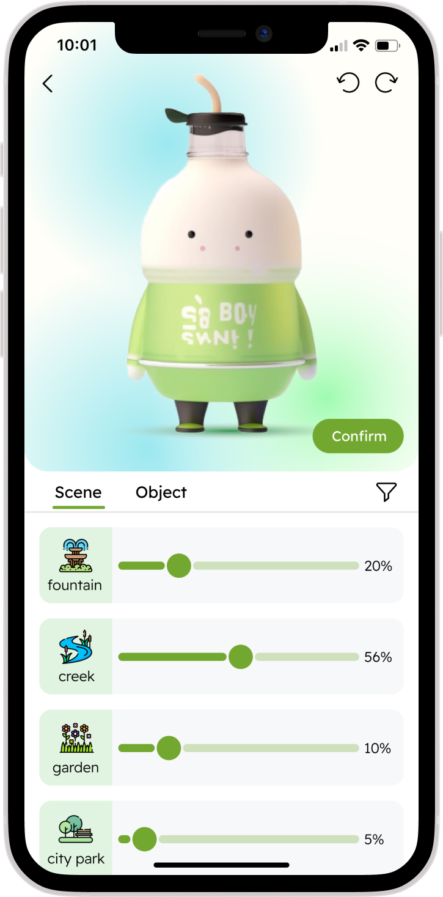
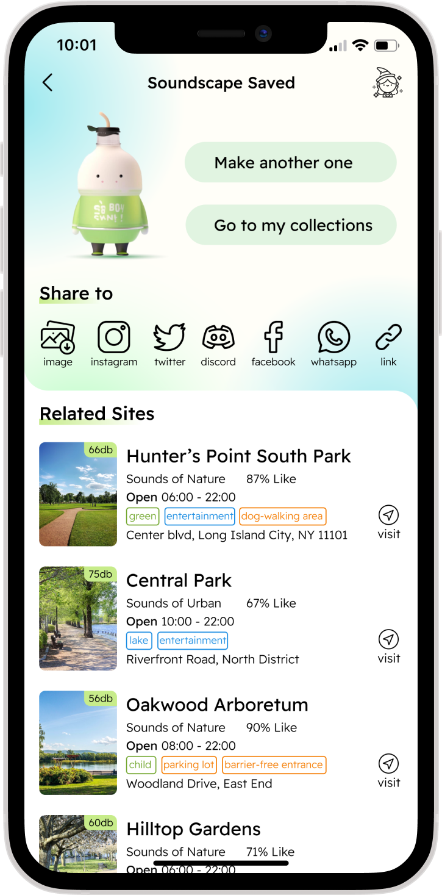
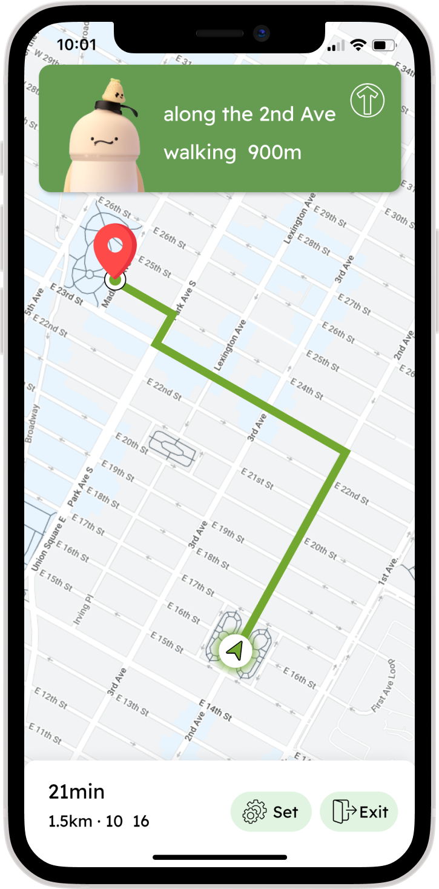
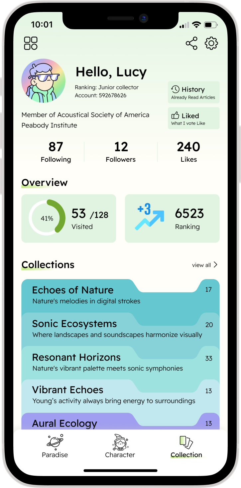
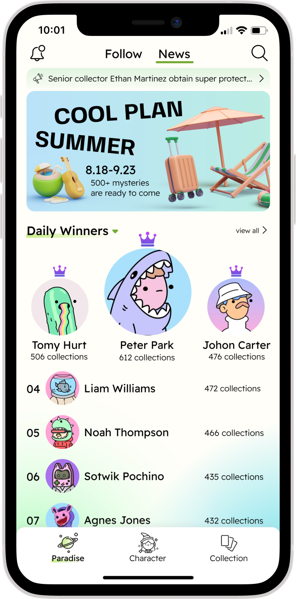
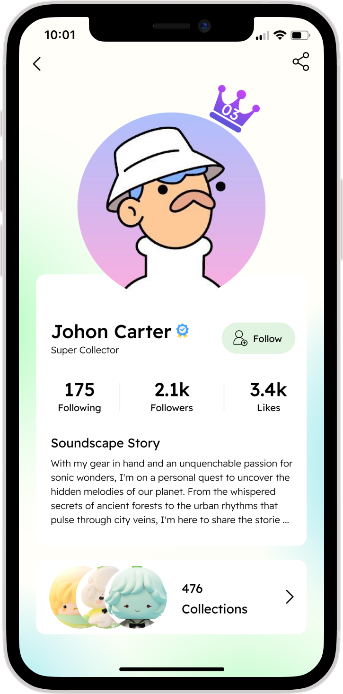
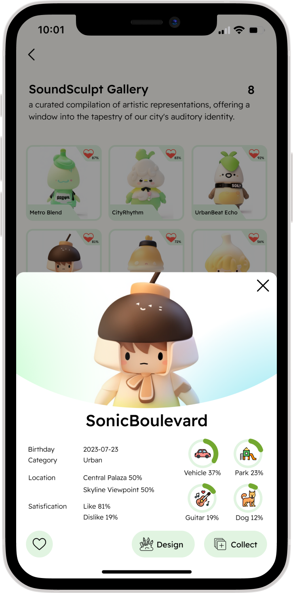

📱Main Features
01. A Signage to detech the Soundscape
In shape of book wich inspired from the word "encyclopedia"
Shaped as an closed book, this signage integrates into the cityscape while retaining the functionality of traditional street signs. Positioned above, it serves as a unique yet familiar landmark, combining aesthetic appeal with practical utility. The book-shaped structure not only enhances visibility but also adds a touch of artistic sophistication to urban settings.


02. Exploring
Primary - Detection and Interaction
"Mixie Melodia," an enchanting avatar that responds dynamically to the surrounding soundscape. As users traverse the city, Mixie Melodia becomes a whimsical companion, harmonizing with the environment and elevating the ordinary street sign into an interactive urban artwork.
Secondary - Introduction & Information
Let people know more about this specific sound environment and overall acoustical scale around the city by clicking "Learn More" or "Library" icon.

Index & Library
By looking at the "library", users can know more about the entire city. This curated collection serves not only personal exploration but becomes a valuable resource for professionals studying urban acoustics. Additionally, it connects like-minded individuals, fostering a harmonious city soundscape.

03. Collecting
To explore
Following the trend of young people’s preference of “clock in” popular locations, the transition of signage to APP help them explore more.
Contacting phone to transform the avatar to APP, it allows players find an appropriate soundscape space that suits them more enjoyably through the “Change Mixie Melodia’s Clothes” game service.
04. Customization
To experience
The customization journey goes from collecting avatar from current signage, changing scenes and objects that already detected, saving to own folders, recommending related sites, and directing.




05. Avatar's community
To share
Enthusiasts are promoted to avatar art collectors and urban soundscape explorers, and the platform provides an interactive community that enhance social attributes creative desire.



